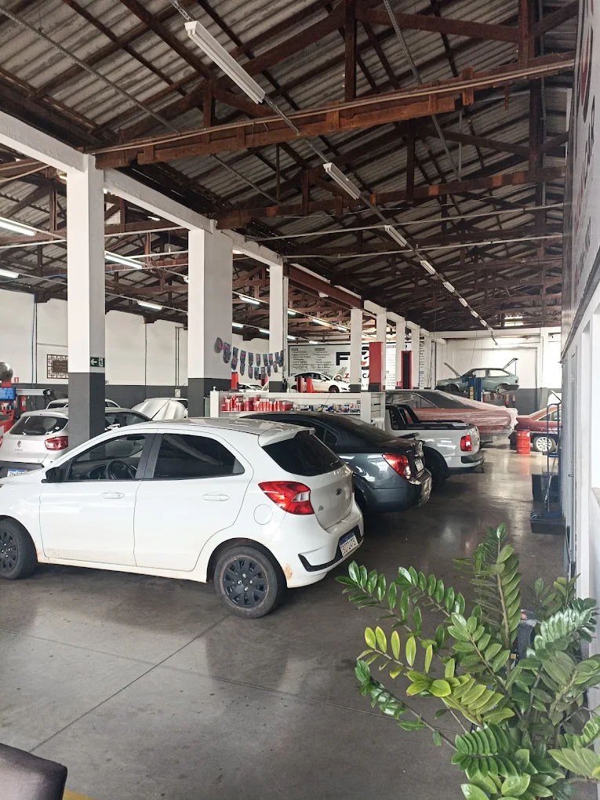

Alinhamento 3D
e balanceamento
Mais estabilidade ao dirigir e cuidado com o desgaste dos pneus.
PRECISÃOSEU CENTRO AUTOMOTIVO EM CAMBÉ
Da revisão preventiva ao reparo que não pode esperar. Cuidado completo para você seguir com tranquilidade.
Precisão no cuidadoAlinhamento com tecnologia 3D
Manutenção completaDo motor ao ar-condicionado
Perto de vocêVila Atalaia, Cambé
CUIDADO EM CADA DETALHE
Serviços para manter seu veículo em dia e cuidar dos imprevistos da rotina.
Mais estabilidade ao dirigir e cuidado com o desgaste dos pneus.
PRECISÃOAtenção aos componentes do seu carro antes que pequenos sinais se tornem problemas.
PREVENÇÃOTrocas para preservar a lubrificação e o funcionamento dos sistemas.
PROTEÇÃOManutenção do sistema de frenagem para cuidar da sua segurança.
SEGURANÇADiagnóstico e manutenção para o funcionamento adequado do motor.
DESEMPENHOCuidado com os sistemas que fazem diferença no controle e no conforto ao dirigir.
ESTABILIDADEManutenção e carga de gás para deixar seus trajetos mais confortáveis.
CONFORTOVAMOS CONVERSAR?
Conte o que está acontecendo e consulte a disponibilidade de atendimento.
(43) 3066-1900
QUEM CUIDA DO SEU CAMINHO
A Fazam Car é um centro automotivo especializado em manutenção preventiva e corretiva. Em Cambé, você encontra serviços para diferentes necessidades do seu veículo.
Seja para colocar a revisão em dia, preparar o carro para viajar ou investigar um ruído diferente, o primeiro passo é conversar com a nossa equipe.
Acompanhe @fazamcar no InstagramPRÓXIMA PARADA: FAZAM CAR
Informe o modelo do veículo e o serviço que precisa.
A equipe confirma a disponibilidade com você.
ESPERAMOS POR VOCÊ
Prefere ligar? (43) 3066-1900
ANTES DE VIR
Entre em contato pelo WhatsApp ou pelo telefone (43) 3066-1900. Informe seu veículo e o serviço desejado. O horário é combinado diretamente com a equipe.
O atendimento é de segunda a sexta-feira, das 08:00 às 18:00. Aos sábados e domingos, a oficina permanece fechada.
Sim. A troca de óleo de câmbio automático está entre os serviços oferecidos. Informe o modelo e o ano do veículo para consultar os detalhes com a equipe.
Fale com a equipe e descreva o serviço ou o sintoma apresentado. Dependendo do caso, pode ser necessária uma avaliação presencial para definir o orçamento.